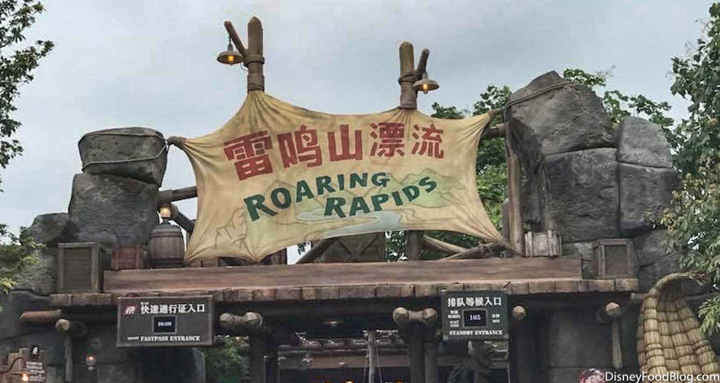
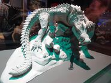

 Roaring Rapids is a river rapids type ride at Shanghai Disneyland. It opened in 2016 with the rest of the park and is one of the main thrill attractions for guests. The story behind the ride is that an Adventure Company hired guests to go upriver to a base camp. Unfortunately a fallen tree blocks the path of the boats, resulting in a new path through a mountain to get to the camp. This mountain happens to be the home of the giant crocodilian monster known as Q’aráq (pronounced "croc"), who snaps at the boats as they pass by his lair. Q’aráq is an animatronic figure who was supposed to be extremely powerful and complex, but quickly became known for extensive malfunctions, leaving him mostly static.
"designed to lunge its body" Q’aráq was designed by imagineers to be a large, advanced and fully realistic figure. They made each individual scale textured to look like a prehistoric crocodilian, and worked tirelessly to determine the perfect, most realistic movement for the figure. It was meant to begin crouching, looking at the entrance of the cave, and as boats passed, it would stand up and snap at them, moving its legs to "jump" forward, as if it was going to follow the boats into the water. This idea was incredible,  and Q’aráq was created to be one of Disney's largest, most advanced animatronic figures, but with such a dynamic creature, problems quickly followed. For unknown reasons, many parts of the programming just seemed to not work, leaving the animatronic mostly static.
While the malfunctions left Q’aráq mostly immobile, imagineers did work to get him at least closer to moving the way he was meant to. While his body could no longer stand up to move forward, they did get his full head movement working once again, his body lays limp, and there is no documentation of a fully mobile Q’aráq, with his whole body in motion. This is especially heartbreaking since Q’aráq is in the same position as a similar animatronic that is at Disney's Animal Kingdom, the yeti from Expedition Everest. Both are mountain dwelling mythical creatures that are now trapped in an incomplete movement mode, with no sign of a refurbishment to fix them. Unlike Yeti however, Q’aráq at least is in a mode called "Halfway to A-Mode," a mode where he moves, but not completely. Since the entirety of Shanghai Disneyland is extremely new, it is unlikely that an extensive refurbishment will occur to fix the unknown issues pertaining to Q’aráq anytime soon, especially since Q’aráq still has some range of motion. But, hopefully Q’aráq will one day be fixed completely and run the way imagineers envisioned.